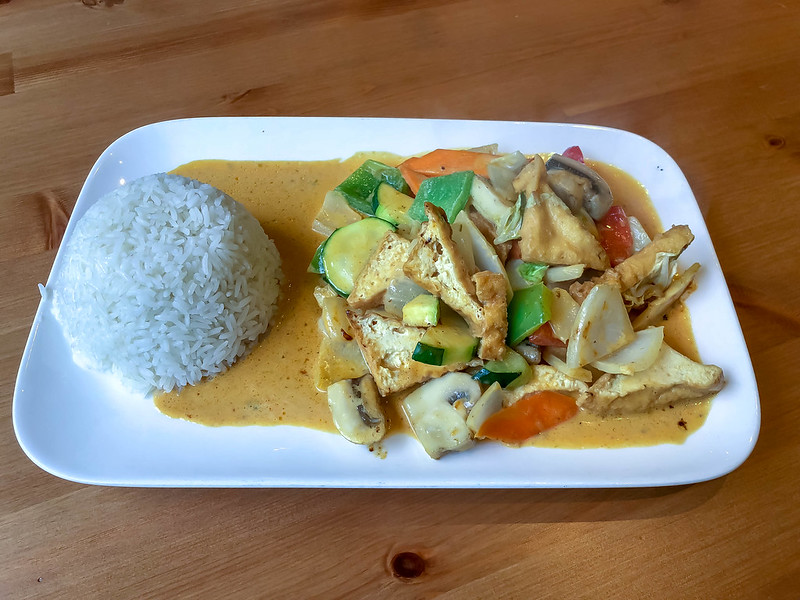

Thai Curry

Description
This recipe will let you create a delicious, healthy plant-based Thai curry, for four people
Time to prepare - 20 minutes
Time to cook - 15 minutes
Spice level - 🌶 🌶 🌶
Ingredients
- 200g Smoked Tofu
- 5 Ring of Fire Chillies
- 2.5 cm Ginger
- 1 Lemongrass stalk
- 1 Clove of Garlic
- 1 Red Pepper
- 3 Table spoons of Thai curry paste
- 1 Medium sized carrot
- A handfull of baby sweatcorn
- 1 Cup of basmati rice
- 250 ml Coconut milk
Steps
- Heat two cups of water in a pan. Add a pinch of salt. When the water starts to boil, add the rice. Once the rice starts to boil, reduce the heat and put a lid on the pan
- Pour the coconut milk into a measuring jug
- Finely chop the chillies, ginger, lemongrass and garlic. Add them, and the curry paste to the coconut milk and stir
- Slice the carrot and red pepper into strips
- Heat some oil in a pan, then add the baby sweatcorn, cut carrot and red peppers. Stir fry these ingredients on a high heat
- While the veggies are frying, cut the tofu into 1 cm3 cubes. Once cubed, add the tofu to the veggies and continue to stir fry on a high heat
- After a minute or two, give the coconut milk mix another stir and pour it onto the frying veggies
- Once the rice is cooked and the curry has heated through, serve up
You may want to add some chilli leaves to garnish